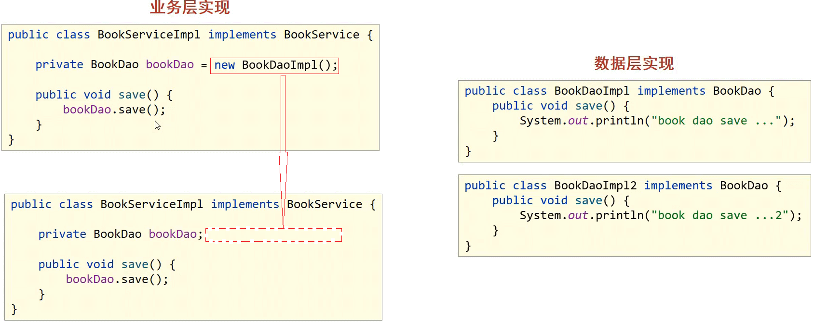
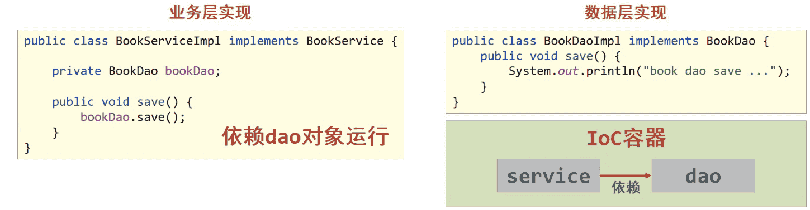
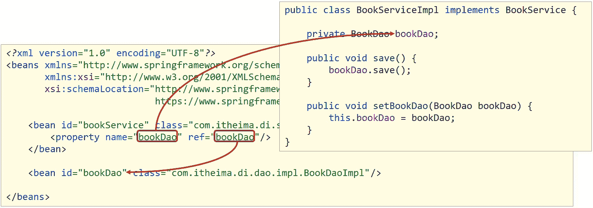

Spring中IOC和DI概念、配置与使用
1. 优势
Spring框架主要的优势是在简化开发和框架整合上，Spring框架的主要内容:
-
简化开发: Spring框架中提供了两个大的核心技术，分别是:
- IOC
- AOP
- 事务处理
1.Spring的简化操作都是基于这两块内容,所以这也是Spring学习中最为重要的两个知识点。
2.事务处理属于Spring中AOP的具体应用，可以简化项目中的事务管理，也是Spring技术中的一大亮点。
-
框架整合: Spring在框架整合这块已经做到了极致，它可以整合市面上几乎所有主流框架，比如:
- MyBatis
- MyBatis-plus
- Struts
- Struts2
- Hibernate
- ……
2. Spring相关概念
2.1 初识Spring
-
官网：https://spring.io，从官网可以大概了解到：
- Spring能做什么:用以开发web、微服务以及分布式系统等,光这三块就已经占了JavaEE开发的九成多。
- Spring并不是单一的一个技术，而是一个族，可以从官网的
Projects中查看其包含的所有技术。
-
Spring发展到今天已经形成了一种开发的生态圈,Spring提供了若干个项目,每个项目用于完成特定的功能。
-
Spring已形成了完整的生态圈，也就是说可以完全使用Spring技术完成整个项目的构建、设计与开发。
-
Spring有若干个项目，可以根据需要自行选择，把这些个项目组合起来，起了一个名称叫全家桶
说明:
可以进入
https://spring.io/projects网站进行查看。全家桶这些技术并不是所有的都需要学习，额外需要重点关注
Spring Framework、SpringBoot和SpringCloud:- Spring Framework:Spring框架，是Spring中最早最核心的技术，也是所有其他技术的基础。
- SpringBoot:Spring是来简化开发，而SpringBoot是来帮助Spring在简化的基础上能更快速进行开发。
- SpringCloud:这个是用来做分布式之微服务架构的相关开发。
本文学习的Spring其实指的是Spring Framework。
-
2.2 Spring系统架构
前面说spring指的是Spring Framework,那么它其中都包含哪些内容?
针对这些问题，将从系统架构图来进行说明:
2.2.1 系统架构图
-
Spring Framework是Spring生态圈中最基础的项目，是其他项目的根基。
-
Spring Framework的发展也经历了很多版本的变更，每个版本都有相应的调整
-
Spring Framework的的版本4架构图包括如下部分：
(1)核心层
- Core Container:核心容器，这个模块是Spring最核心的模块，其他的都需要依赖该模块
(2)AOP层
- AOP:面向切面编程，它依赖核心层容器，目的是在不改变原有代码的前提下对其进行功能增强
- Aspects:AOP是思想,Aspects是对AOP思想的具体实现
(3)数据层
- Data Access:数据访问，Spring全家桶中有对数据访问的具体实现技术
- Data Integration:数据集成，Spring支持整合其他的数据层解决方案，比如Mybatis
- Transactions:事务，Spring中事务管理是Spring AOP的一个具体实现，也是后期学习的重点内容
(4)Web层
- 这一层的内容将在SpringMVC框架具体学习
(5)Test层
- Spring主要整合了Junit来完成单元测试和集成测试
2.3 Spring核心概念
在Spring核心概念这部分内容中主要包含IOC/DI、IOC容器和Bean
2.3.1 目前项目中的问题
先分析下目前咱们代码在编写过程中遇到的问题:

(1)业务层需要调用数据层的方法，就需要在业务层new数据层的对象
(2)如果数据层的实现类发生变化，那么业务层的代码也需要跟着改变，发生变更后，都需要进行编译打包和重部署
(3)所以，现在代码在编写的过程中存在的问题是：耦合度偏高
针对这个问题，该如何解决呢?
就想，如果能把框中的内容给去掉，不就可以降低依赖了么，但是又会引入新的问题，去掉以后程序能运行么?
答案肯定是不行，因为bookDao没有赋值为Null，强行运行就会出空指针异常。
所以现在的问题就是，业务层不想new对象，运行的时候又需要这个对象，该咋办呢?
针对这个问题，Spring就提出了一个解决方案:
- 使用对象时，在程序中不要主动使用new产生对象，转换为由外部提供对象
这种实现思就是Spring的一个核心概念
2.3.2 IOC、IOC容器、Bean、DI
- IOC（Inversion of Control）控制反转
(1)什么是控制反转呢？
- 使用对象时，由主动new产生对象转换为由外部提供对象，此过程中对象创建控制权由程序转移到外部，此思想称为控制反转。
- 业务层要用数据层的类对象，以前是自己
new的 - 现在自己不new了，交给
别人[外部]来创建对象 别人[外部]就反转控制了数据层对象的创建权- 这种思想就是控制反转
- 别人[外部]指定是什么呢?继续往下学
- 业务层要用数据层的类对象，以前是自己
(2)Spring和IOC之间的关系是什么呢?
- Spring技术对IOC思想进行了实现
- Spring提供了一个容器，称为IOC容器，用来充当IOC思想中的"外部"
- IOC思想中的
别人[外部]指的就是Spring的IOC容器
(3)IOC容器的作用以及内部存放的是什么?
- IOC容器负责对象的创建、初始化等一系列工作，其中包含了数据层和业务层的类对象
- 被创建或被管理的对象在IOC容器中统称为Bean
- IOC容器中放的就是一个个的Bean对象
(4)当IOC容器中创建好service和dao对象后，程序能正确执行么?
- 不行，因为service运行需要依赖dao对象
- IOC容器中虽然有service和dao对象
- 但是service对象和dao对象没有任何关系
- 需要把dao对象交给service,也就是说要绑定service和dao对象之间的关系
像这种在容器中建立对象与对象之间的绑定关系就要用到DI:
- DI（Dependency Injection）依赖注入

(1)什么是依赖注入呢?
- 在容器中建立bean与bean之间的依赖关系的整个过程，称为依赖注入
- 业务层要用数据层的类对象，以前是自己
new的 - 现在自己不new了，靠
别人[外部其实指的就是IOC容器]来给注入进来 - 这种思想就是依赖注入
- 业务层要用数据层的类对象，以前是自己
(2)IOC容器中哪些bean之间要建立依赖关系呢?
- 这个需要程序员根据业务需求提前建立好关系，如业务层需要依赖数据层，service就要和dao建立依赖关系
介绍完Spring的IOC和DI的概念后，会发现这两个概念的最终目标就是:充分解耦，具体实现靠:
- 使用IOC容器管理bean（IOC)
- 在IOC容器内将有依赖关系的bean进行关系绑定（DI）
- 最终结果为:使用对象时不仅可以直接从IOC容器中获取，并且获取到的bean已经绑定了所有的依赖关系.
2.3.3 核心概念小结
这节比较重要，重点要理解什么是IOC/DI思想、什么是IOC容器和什么是Bean：
(1)什么IOC/DI思想?
- IOC:控制反转，控制反转的是对象的创建权
- DI:依赖注入，绑定对象与对象之间的依赖关系
(2)什么是IOC容器?
Spring创建了一个容器用来存放所创建的对象，这个容器就叫IOC容器
(3)什么是Bean?
容器中所存放的一个个对象就叫Bean或Bean对象
3. 入门案例
介绍完Spring的核心概念后，接下来得思考一个问题就是，Spring到底是如何来实现IOC和DI的，那接下来就通过一些简单的入门案例，来演示下具体实现过程:
3.1 IOC入门案例
对于入门案例，得先分析思路然后再代码实现，
3.1.1 入门案例思路分析
(1)Spring是使用容器来管理bean对象的，那么管什么?
- 主要管理项目中所使用到的类对象，比如(Service和Dao)
(2)如何将被管理的对象告知IOC容器?
- 使用配置文件
(3)被管理的对象交给IOC容器，要想从容器中获取对象，就先得思考如何获取到IOC容器?
- Spring框架提供相应的接口
(4)IOC容器得到后，如何从容器中获取bean?
- 调用Spring框架提供对应接口中的方法
(5)使用Spring导入哪些坐标?
- 用别人的东西，就需要在pom.xml添加对应的依赖
3.1.2 入门案例代码实现
需求分析:将BookServiceImpl和BookDaoImpl交给Spring管理，并从容器中获取对应的bean对象进行方法调用。
1.创建Maven的java项目
2.pom.xml添加Spring的依赖jar包
3.创建BookService,BookServiceImpl，BookDao和BookDaoImpl四个类
4.resources下添加spring配置文件，并完成bean的配置
5.使用Spring提供的接口完成IOC容器的创建
6.从容器中获取对象进行方法调用
步骤1:创建Maven项目
1 | my-maven-project |
步骤2:添加Spring的依赖jar包
pom.xml
1 | <dependencies> |
步骤3:添加案例中需要的类
创建BookService,BookServiceImpl，BookDao和BookDaoImpl四个类
1 | public interface BookDao { |
步骤4:添加spring配置文件
resources下添加spring的xml配置文件applicationContext.xml，并完成bean的配置
步骤5:在配置文件中完成bean的配置
1 |
|
注意事项：bean定义时id属性在同一个上下文中(配置文件)不能重复
步骤6:获取IOC容器
使用Spring提供的接口完成IOC容器的创建，创建App类，编写main方法
1 | public class App { |
步骤7:从容器中获取对象进行方法调用
1 | public class App { |
步骤8:运行程序
测试结果为：
1 | book service save ... |
Spring的IOC入门案例已经完成，但是在BookServiceImpl的类中依然存在BookDaoImpl对象的new操作，它们之间的耦合度还是比较高，这块该如何解决，就需要用到下面的DI:依赖注入。
3.2 DI入门案例
对于DI的入门案例，依然先分析思路然后再代码实现，
3.2.1 入门案例思路分析
(1)要想实现依赖注入，必须要基于IOC管理Bean
- DI的入门案例要依赖于前面IOC的入门案例
(2)Service中使用new形式创建的Dao对象是否保留?
- 需要删除掉，最终要使用IOC容器中的bean对象
(3)Service中需要的Dao对象如何进入到Service中?
- 在Service中提供方法，让Spring的IOC容器可以通过该方法传入bean对象
(4)Service与Dao间的关系如何描述?
- 使用配置文件
3.2.2 入门案例代码实现
需求:基于IOC入门案例，在BookServiceImpl类中删除new对象的方式，使用Spring的DI完成Dao层的注入
1.删除业务层中使用new的方式创建的dao对象
2.在业务层提供BookDao的setter方法
3.在配置文件中添加依赖注入的配置
4.运行程序调用方法
步骤1: 去除代码中的new
在BookServiceImpl类中，删除业务层中使用new的方式创建的dao对象
1 | public class BookServiceImpl implements BookService { |
步骤2:为属性提供setter方法
在BookServiceImpl类中,为BookDao提供setter方法
1 | public class BookServiceImpl implements BookService { |
步骤3:修改配置完成注入
在配置文件中添加依赖注入的配置
1 |
|
注意:配置中的两个bookDao的含义是不一样的
- name="bookDao"中
bookDao的作用是让Spring的IOC容器在获取到名称后，将首字母大写，前面加set找对应的setBookDao()方法进行对象注入 - ref="bookDao"中
bookDao的作用是让Spring能在IOC容器中找到id为bookDao的Bean对象给bookService进行注入 - 综上所述，对应关系如下:

步骤4:运行程序
运行，测试结果为：
1 | book service save ... |
4. IOC相关内容
通过前面两个案例，已经学习了bean如何定义配置，DI如何定义配置以及容器对象如何获取的内容，接下来主要是把这三块内容展开进行详细的讲解，深入的学习下这三部分的内容，首先是bean基础配置。
4.1 bean基础配置
对于bean的配置中，主要会讲解bean基础配置,bean的别名配置,bean的作用范围配置(重点),这三部分内容：
4.1.1 bean基础配置(id与class)
对于bean的基础配置，在前面的案例中已经使用过:
1 | <beans> |
1 | <bean id="" class=""/> |
其中，bean标签的功能、使用方式以及id和class属性的作用，通过一张图来描述下
| 类别 | 描述 |
|---|---|
| 名称 | bean |
| 类型 | 标签 |
| 所属 | beans标签 |
| 功能 | 定义spring核心容器管理的对象 |
| 属性列表 | id: bean的id,使用容器可以通过id值获取对应的bean,在一个容器中id值唯一 class: bean的类型，即配置的bean的全路径类名 |
| 范例 | <bean id="bookDao"class="com.itheima.dao.impl.BookDaoImpl"/><bean id="bookService"class="com.itheima.service.impl.BookServiceImpl"></bean> |
这其中需要重点掌握的是:bean标签的id和class属性的使用。
思考：
- class属性能不能写接口如
BookDao的类全名呢?
答案肯定是不行，因为接口是没办法创建对象的。
- 前面提过为bean设置id时，id必须唯一，但是如果由于命名习惯而产生了分歧后，该如何解决?
在解决这个问题之前，需要准备下开发环境，对于开发环境可以有两种解决方案:
-
使用前面IOC和DI的案例
-
重新搭建一个新的案例环境,目的是方便查阅代码
- 搭建的内容和前面的案例是一样的
4.1.2 bean的name属性
环境准备好后，接下来就可以在这个环境的基础上来学习下bean的别名配置，
首先来看下别名的配置说明:
| 类别 | 描述 |
|---|---|
| 名称 | name |
| 类型 | 属性 |
| 所属 | bean标签 |
| 功能 | 定义bean的别名，可定义多个，使用逗号，分号，空格进行分隔 |
| 范例 | <bean id="bookDao" name="dao bookDaoImpl" class="com.itheima.dao.impl.BookDaoImpl"/><bean id="bookService" name="service,bookServiceImpl" class="com.itheima.service.impl.BookServiceImpl"></bean> |
步骤1：配置别名
打开spring的配置文件applicationContext.xml
1 |
|
说明:Ebi全称Enterprise Business Interface，翻译为企业业务接口
步骤2:根据名称容器中获取bean对象
1 | public class AppForName { |
步骤3:运行程序
测试结果为：
1 | book service save ... |
注意事项:
-
bean依赖注入的ref属性指定bean，必须在容器中存在
-
如果不存在,则会报错，这个错误需要特别关注下:
获取bean无论是通过id还是name获取，如果无法获取到，将抛出异常NoSuchBeanDefinitionException
4.1.3 bean作用范围scope配置
关于bean的作用范围是bean属性配置的一个重点内容。
看到这个作用范围，就得思考bean的作用范围是来控制bean哪块内容的?
先来看下bean作用范围的配置属性:
| 类别 | 描述 |
|---|---|
| 名称 | scope |
| 类型 | 属性 |
| 所属 | bean标签 |
| 功能 | 定义bean的作用范围，可选范围如下： 1. singleton: 单例（默认） 2. prototype: 非单例 |
| 范例 | <bean id="bookDao"class="com.itheima.dao.impl.BookDaoImpl" scope="prototype"/> |
4.1.3.1 验证IOC容器中对象是否为单例
验证思路
同一个bean获取两次，将对象打印到控制台，看打印出的地址值是否一致。
具体实现
-
创建一个AppForScope的类，在其main方法中来验证
1
2
3
4
5
6
7
8
9
10
11public class AppForScope {
public static void main(String[] args) {
ApplicationContext ctx = new
ClassPathXmlApplicationContext("applicationContext.xml");
BookDao bookDao1 = (BookDao) ctx.getBean("bookDao");
BookDao bookDao2 = (BookDao) ctx.getBean("bookDao");
System.out.println(bookDao1);
System.out.println(bookDao2);
}
} -
打印，观察控制台的打印结果
1
2com.itheima.dao.impl.BookDaoImpl@5025a98f
com.itheima.dao.impl.BookDaoImpl@5025a98f -
结论:默认情况下，Spring创建的bean对象都是单例的
获取到结论后，问题就来了，那如果我想创建出来非单例的bean对象，该如何实现呢?
4.1.3.2 配置bean为非单例
在Spring配置文件中，配置scope属性来实现bean的非单例创建
-
在Spring的配置文件中，修改
<bean>的scope属性，将scope设置为singleton1
<bean id="bookDao" name="dao" class="com.itheima.dao.impl.BookDaoImpl" scope="singleton"/>
运行AppForScope，打印看结果
1
2com.itheima.dao.impl.BookDaoImpl@5025a98f
com.itheima.dao.impl.BookDaoImpl@5025a98f -
将scope设置为
prototype1
<bean id="bookDao" name="dao" class="com.itheima.dao.impl.BookDaoImpl" scope="prototype"/>
运行AppForScope，打印看结果
1
2com.itheima.dao.impl.BookDaoImpl@5025a98f
com.itheima.dao.impl.BookDaoImpl@49993335 -
结论，使用bean的
scope属性可以控制bean的创建是否为单例：singleton默认为单例prototype为非单例
4.1.3.3 scope使用后续思考
介绍完scope属性以后，来思考几个问题:
- 为什么bean默认为单例?
- bean为单例的意思是在Spring的IOC容器中只会有该类的一个对象
- bean对象只有一个就避免了对象的频繁创建与销毁，达到了bean对象的复用，性能高
- bean在容器中是单例的，会不会产生线程安全问题?
- 如果对象是有状态对象，即该对象有成员变量可以用来存储数据的，
- 因为所有请求线程共用一个bean对象，所以会存在线程安全问题。
- 如果对象是无状态对象，即该对象没有成员变量没有进行数据存储的，
- 因方法中的局部变量在方法调用完成后会被销毁，所以不会存在线程安全问题。
- 哪些bean对象适合交给容器进行管理?
- 表现层对象
- 业务层对象
- 数据层对象
- 工具对象
- 哪些bean对象不适合交给容器进行管理?
- 封装实例的域对象，因为会引发线程安全问题，所以不适合。
4.14 bean基础配置小结
关于bean的基础配置中，需要掌握以下属性:
1 | <bean |
4.2 bean实例化
对象已经能交给Spring的IOC容器来创建了，但是容器是如何来创建对象的呢?
就需要研究下bean的实例化过程，在这块内容中主要解决两部分内容，分别是
- bean是如何创建的
- 实例化bean的三种方式，
构造方法,静态工厂和实例工厂
在讲解这三种创建方式之前，需要先确认一件事:
bean本质上就是对象，对象在new的时候会使用构造方法完成，那创建bean也是使用构造方法完成的。
基于这个知识点出发，来验证spring中bean的三种创建方式，
4.2.1 环境准备
为了方便阅读代码，重新准备个开发环境，
- 创建一个Maven项目
- pom.xml添加依赖
- resources下添加spring的配置文件applicationContext.xml
这些步骤和前面的都一致，可以快速的拷贝即可:
4.2.2 构造方法实例化
在上述的环境下，来研究下Spring中的第一种bean的创建方式构造方法实例化:
步骤1:准备需要被创建的类
准备一个BookDao和BookDaoImpl类
1 |
|
步骤2:将类配置到Spring容器
1 |
|
步骤3:编写运行程序
1 | public class AppForInstanceBook { |
步骤4:类中提供构造函数测试
在BookDaoImpl类中添加一个无参构造函数，并打印一句话，方便观察结果。
1 | public class BookDaoImpl implements BookDao { |
运行程序，如果控制台有打印构造函数中的输出，说明Spring容器在创建对象的时候也走的是构造函数
1 | book dao constructor is running .... |
步骤5:将构造函数改成private测试
1 | public class BookDaoImpl implements BookDao { |
运行程序，能执行成功,说明内部走的依然是构造函数,能访问到类中的私有构造方法,显而易见Spring底层用的是反射
1 | book dao constructor is running .... |
步骤6:构造函数中添加一个参数测试
1 | public class BookDaoImpl implements BookDao { |
运行程序，
程序会报错，说明Spring底层使用的是类的无参构造方法。
1 | Caused by: org.springframework.beans.BeanInstantiationException: Failed to instantiate [com.itheima.dao.impl.BookDaoImpl]: No default constructor found; nested exception is java.lang.NoSuchMethodException: com.itheima.dao.impl.BookDaoImpl.<init>() |
4.2.3 分析Spring的错误信息
接下来，主要研究下Spring的报错信息来学一学如阅读。
- 错误信息从下往上依次查看，因为上面的错误大都是对下面错误的一个包装，最核心错误是在最下面
- Caused by: java.lang.NoSuchMethodException: com.itheima.dao.impl.BookDaoImpl.
<init>()- Caused by 翻译为
引起，即出现错误的原因 - java.lang.NoSuchMethodException:抛出的异常为
没有这样的方法异常 - com.itheima.dao.impl.BookDaoImpl.
<init>():哪个类的哪个方法没有被找到导致的异常，<init>()指定是类的构造方法，即该类的无参构造方法
- Caused by 翻译为
如果最后一行错误获取不到错误信息，接下来查看第二层:
Caused by: org.springframework.beans.BeanInstantiationException: Failed to instantiate [com.itheima.dao.impl.BookDaoImpl]: No default constructor found; nested exception is java.lang.NoSuchMethodException: com.itheima.dao.impl.BookDaoImpl.<init>()
- nested:嵌套的意思，后面的异常内容和最底层的异常是一致的
- Caused by: org.springframework.beans.BeanInstantiationException: Failed to instantiate [com.itheima.dao.impl.BookDaoImpl]: No default constructor found;
- Caused by:
引发 - BeanInstantiationException:翻译为
bean实例化异常 - No default constructor found:没有一个默认的构造函数被发现
- Caused by:
至此，关于Spring的构造方法实例化就已经学习完了，因为每一个类默认都会提供一个无参构造函数，所以其实真正在使用这种方式的时候，什么也不需要做。这也是以后比较常用的一种方式。
4.2.4 静态工厂实例化(了解即可，这里省略)
4.2.5 实例工厂与FactoryBean(了解即可，这里省略)
4.2.6 bean实例化小结
通过这一节的学习，需要掌握:
(1)bean是如何创建的呢?
1 | 构造方法 |
(2)Spring的IOC实例化对象的三种方式分别是:
- 构造方法(常用)
- 静态工厂(了解)
- 实例工厂(了解)
这些方式中，重点掌握构造方法即可。
需要注意的一点是，构造方法在类中默认会提供，但是如果重写了构造方法，默认的就会消失，在使用的过程中需要注意，如果需要重写构造方法，最好把默认的构造方法也重写下。
4.3 bean的生命周期
关于bean的相关知识还有最后一个是bean的生命周期,对于生命周期，主要围绕着bean生命周期控制来讲解:
- 首先理解下什么是生命周期?
- 从创建到消亡的完整过程,例如人从出生到死亡的整个过程就是一个生命周期。
- bean生命周期是什么?
- bean对象从创建到销毁的整体过程。
- bean生命周期控制是什么?
- 在bean创建后到销毁前做一些事情。
现在面临的问题是如何在bean的创建之后和销毁之前把需要添加的内容添加进去。
4.3.1 环境准备
还是老规矩，为了方便后期代码的阅读，重新搭建下环境:
- 创建一个Maven项目
- pom.xml添加依赖
- resources下添加spring的配置文件applicationContext.xml
这些步骤和前面的都一致，可以快速的拷贝即可:
(1)项目中添加BookDao、BookDaoImpl、BookService和BookServiceImpl类
1 | public interface BookDao { |
(2)resources下提供spring的配置文件
1 |
|
(3)编写AppForLifeCycle运行类，加载Spring的IOC容器，并从中获取对应的bean对象
1 | public class AppForLifeCycle { |
4.3.2 生命周期设置
接下来，在上面这个环境中来为BookDao添加生命周期的控制方法，具体的控制有两个阶段:
- bean创建之后，想要添加内容，比如用来初始化需要用到资源
- bean销毁之前，想要添加内容，比如用来释放用到的资源
步骤1:添加初始化和销毁方法
针对这两个阶段，在BooDaoImpl类中分别添加两个方法，方法名任意
1 | public class BookDaoImpl implements BookDao { |
步骤2:配置生命周期
在配置文件添加配置，如下:
1 | <bean id="bookDao" class="com.itheima.dao.impl.BookDaoImpl" init-method="init" destroy-method="destory"/> |
步骤3:运行程序
运行AppForLifeCycle打印结果为:
1 | init... |
从结果中可以看出，init方法执行了，但是destroy方法却未执行，这是为什么呢?
- Spring的IOC容器是运行在JVM中
- 运行main方法后,JVM启动,Spring加载配置文件生成IOC容器,从容器获取bean对象，然后调方法执行
- main方法执行完后，JVM退出，这个时候IOC容器中的bean还没有来得及销毁就已经结束了
- 所以没有调用对应的destroy方法
知道了出现问题的原因，具体该如何解决呢?
4.3.3 close关闭容器
-
ApplicationContext中没有close方法
-
需要将ApplicationContext更换成ClassPathXmlApplicationContext
1
2ClassPathXmlApplicationContext ctx = new
ClassPathXmlApplicationContext("applicationContext.xml"); -
调用ctx的close()方法
1
ctx.close();
-
运行程序，就能执行destroy方法的内容
1
2
3init...
book dao save ...
destory...
4.3.4 注册钩子关闭容器
-
除了显式地调用
close()方法外，还可以注册关闭钩子，让JVM在退出之前自动关闭Spring容器。这可以通过调用registerShutdownHook()方法来实现。 -
调用ctx的registerShutdownHook()方法
1
ctx.registerShutdownHook(); //当JVM关闭时，会自动调用容器的close()方法以执行清理操作。
**注意:**registerShutdownHook在ApplicationContext中也没有
-
运行后，查询打印结果
1
2
3init...
book dao save ...
destory...
两种方式介绍完后，close和registerShutdownHook选哪个?
相同点:这两种都能用来关闭容器
不同点:close()是在调用的时候关闭，registerShutdownHook()是在JVM退出前调用关闭。
分析上面的实现过程，会发现添加初始化和销毁方法，即需要编码也需要配置，实现起来步骤比较多也比较乱。
Spring提供了两个接口来完成生命周期的控制，好处是可以不用再进行配置init-method和destroy-method
接下来在BookServiceImpl完成这两个接口的使用:
修改BookServiceImpl类，添加两个接口InitializingBean， DisposableBean并实现接口中的两个方法afterPropertiesSet和destroy
1 | public class BookServiceImpl implements BookService, InitializingBean, DisposableBean { |
重新运行AppForLifeCycle类，
1 | init... |
那第二种方式的实现，也介绍完了。
小细节
-
对于
InitializingBean接口中的afterPropertiesSet方法，翻译过来为属性设置之后。 -
对于
BookServiceImpl来说，bookDao是它的一个属性 -
setBookDao方法是Spring的IOC容器为其注入属性的方法
-
思考:afterPropertiesSet和setBookDao谁先执行?
-
从方法名分析，猜想应该是setBookDao方法先执行
-
验证思路，在setBookDao方法中添加一句话
1
2
3
4
5public void setBookDao(BookDao bookDao) {
System.out.println("set .....");
this.bookDao = bookDao;
} -
重新运行AppForLifeCycle，打印结果如下:
1
2
3
4
5
6init...
set .....
service init
book dao save ...
service destroy
destory...验证的结果和猜想的结果是一致的，所以初始化方法会在类中属性设置之后执行。
-
4.3.5 bean生命周期小结
(1)关于Spring中对bean生命周期控制提供了两种方式:
- 在配置文件中的bean标签中添加
init-method和destroy-method属性 - 类实现
InitializingBean与DisposableBean接口，这种方式了解下即可。
(2)对于bean的生命周期控制在bean的整个生命周期中所处的位置如下:
- 初始化容器
- 1.创建对象(内存分配)
- 2.执行构造方法
- 3.执行属性注入(set操作)
- 4.执行bean初始化方法
- 使用bean
- 1.执行业务操作
- 关闭/销毁容器
- 1.执行bean销毁方法
(3)关闭容器的两种方式:
-
手工关闭容器：
ConfigurableApplicationContext接口close()方法
-
注册关闭钩子，在虚拟机退出前先关闭容器再退出虚拟机:
ConfigurableApplicationContext接口registerShutdownHook()方法
5. DI相关内容
前面已经完成了bean相关操作的讲解，接下来就进入第二个大的模块DI依赖注入，首先来介绍下Spring中有哪些注入方式?
先来思考
- 向一个类中传递数据的方式有几种?
- 普通方法(set方法)
- 构造方法
- 依赖注入描述了在容器中建立bean与bean之间的依赖关系的过程，如果bean运行需要的是数字或字符串呢?
- 引用类型
- 简单类型(基本数据类型与String)
Spring就是基于上面这些知识点，为提供了两种注入方式，分别是:
- setter注入
- 简单类型
- 引用类型
- 构造器注入
- 简单类型
- 引用类型
依赖注入的方式已经介绍完，接下来挨个学习下:
5.1 setter注入
- 对于setter方式注入引用类型的方式之前已经学习过，快速回顾下:
- 在bean中定义引用类型属性，并提供可访问的set方法
1 | public class BookServiceImpl implements BookService { |
- 配置中使用property标签ref属性注入引用类型对象
1 | <bean id="bookService" class="com.itheima.service.impl.BookServiceImpl"> |
5.1.1 环境准备
为了更好的学习下面内容，依旧准备一个新环境:
- 创建一个Maven项目
- pom.xml添加依赖
- resources下添加spring的配置文件
这些步骤和前面的都一致，可以快速的拷贝即可:
(1)项目中添加BookDao、BookDaoImpl、UserDao、UserDaoImpl、BookService和BookServiceImpl类
1 | public interface BookDao { |
(2)resources下提供spring的配置文件
1 |
|
(3)编写AppForDISet运行类，加载Spring的IOC容器，并从中获取对应的bean对象
1 | public class AppForDISet { |
接下来，在上面这个环境中来完成setter注入的学习:
5.1.2 注入引用数据类型
需求:在bookServiceImpl对象中注入userDao
1.在BookServiceImpl中声明userDao属性
2.为userDao属性提供setter方法
3.在配置文件中使用property标签注入
步骤1:声明属性并提供setter方法
在BookServiceImpl中声明userDao属性，并提供setter方法
1 | public class BookServiceImpl implements BookService{ |
步骤2:配置文件中进行注入配置
在applicationContext.xml配置文件中使用property标签注入
1 |
|
步骤3:运行程序
运行AppForDISet类，查看结果，说明userDao已经成功注入。
1 | book service save ... |
5.1.3 注入简单数据类型
需求：给BookDaoImpl注入一些简单数据类型的数据
参考引用数据类型的注入，可以推出具体的步骤为:
1.在BookDaoImpl类中声明对应的简单数据类型的属性
2.为这些属性提供对应的setter方法
3.在applicationContext.xml中配置
思考:
引用类型使用的是<property name="" ref=""/>,简单数据类型还是使用ref么?
ref是指向Spring的IOC容器中的另一个bean对象的，对于简单数据类型，没有对应的bean对象，该如何配置?
步骤1:声明属性并提供setter方法
在BookDaoImpl类中声明对应的简单数据类型的属性,并提供对应的setter方法
1 | public class BookDaoImpl implements BookDao { |
步骤2:配置文件中进行注入配置
在applicationContext.xml配置文件中使用property标签注入
1 |
|
说明:
value:后面跟的是简单数据类型，对于参数类型，Spring在注入的时候会自动转换，但是不能写成
1 | <property name="connectionNum" value="abc"/> |
这样的话，spring在将abc转换成int类型的时候就会报错。
步骤3:运行程序
运行AppForDISet类，查看结果，说明userDao已经成功注入。
1 | book service save ... |
**注意:**两个property注入标签的顺序可以任意。
对于setter注入方式的基本使用就已经介绍完了，
- 对于引用数据类型使用的是
<property name="" ref=""/> - 对于简单数据类型使用的是
<property name="" value=""/>
5.2 构造器注入
5.2.1 环境准备
构造器注入也就是构造方法注入，学习之前，还是先准备下环境:
- 创建一个Maven项目
- pom.xml添加依赖
- resources下添加spring的配置文件
这些步骤和前面的都一致，可以快速的拷贝即可:
(1)项目中添加BookDao、BookDaoImpl、UserDao、UserDaoImpl、BookService和BookServiceImpl类
1 | public interface BookDao { |
(2)resources下提供spring的配置文件
1 |
|
(3)编写AppForDIConstructor运行类，加载Spring的IOC容器，并从中获取对应的bean对象
1 | public class AppForDIConstructor { |
5.2.2 构造器注入引用数据类型
接下来，在上面这个环境中来完成构造器注入的学习:
需求：将BookServiceImpl类中的bookDao修改成使用构造器的方式注入。
1.将bookDao的setter方法删除掉
2.添加带有bookDao参数的构造方法
3.在applicationContext.xml中配置
步骤1:删除setter方法并提供构造方法
在BookServiceImpl类中将bookDao的setter方法删除掉,并添加带有bookDao参数的构造方法
1 | public class BookServiceImpl implements BookService{ |
步骤2:配置文件中进行配置构造方式注入
在applicationContext.xml中配置
1 |
|
说明:
标签
-
name属性对应的值为构造函数中方法形参的参数名，必须要保持一致。
-
ref属性指向的是spring的IOC容器中其他bean对象。
步骤3：运行程序
运行AppForDIConstructor类，查看结果，说明bookDao已经成功注入。
1 | book service save ... |
5.2.3 构造器注入多个引用数据类型
需求:在BookServiceImpl使用构造函数注入多个引用数据类型，比如userDao
1.声明userDao属性
2.生成一个带有bookDao和userDao参数的构造函数
3.在applicationContext.xml中配置注入
步骤1:提供多个属性的构造函数
在BookServiceImpl声明userDao并提供多个参数的构造函数
1 | public class BookServiceImpl implements BookService{ |
步骤2:配置文件中配置多参数注入
在applicationContext.xml中配置注入
1 |
|
**说明:**这两个<contructor-arg>的配置顺序可以任意
步骤3:运行程序
运行AppForDIConstructor类，查看结果，说明userDao已经成功注入。
1 | book service save ... |
5.2.4 构造器注入多个简单数据类型
需求:在BookDaoImpl中，使用构造函数注入databaseName和connectionNum两个参数。
参考引用数据类型的注入，可以推出具体的步骤为:
1.提供一个包含这两个参数的构造方法
2.在applicationContext.xml中进行注入配置
步骤1:添加多个简单属性并提供构造方法
修改BookDaoImpl类，添加构造方法
1 | public class BookDaoImpl implements BookDao { |
步骤2:配置完成多个属性构造器注入
在applicationContext.xml中进行注入配置
1 |
|
**说明:**这两个<contructor-arg>的配置顺序可以任意
步骤3:运行程序
运行AppForDIConstructor类，查看结果
1 | book service save ... |
上面已经完成了构造函数注入的基本使用，但是会存在一些问题:
- 当构造函数中方法的形参的参数名发生变化后，配置文件中的name属性也需要跟着变
- 这两块存在紧耦合，具体该如何解决?
在解决这个问题之前，需要提前说明的是，这个参数名发生变化的情况并不多，所以上面的还是比较主流的配置方式，下面介绍的，都以了解为主。
方式一:删除name属性，添加type属性，按照类型注入
1 | <bean id="bookDao" class="com.itheima.dao.impl.BookDaoImpl"> |
- 这种方式可以解决构造函数形参名发生变化带来的耦合问题
- 但是如果构造方法参数中有类型相同的参数，这种方式就不太好实现了
方式二:删除type属性，添加index属性，按照索引下标注入，下标从0开始
1 | <bean id="bookDao" class="com.itheima.dao.impl.BookDaoImpl"> |
- 这种方式可以解决参数类型重复问题
- 但是如果构造方法参数顺序发生变化后，这种方式又带来了耦合问题
介绍完两种参数的注入方式，具体该如何选择呢?
- 强制依赖使用构造器进行，使用setter注入有概率不进行注入导致null对象出现
- 强制依赖指对象在创建的过程中必须要注入指定的参数
- 可选依赖使用setter注入进行，灵活性强
- 可选依赖指对象在创建过程中注入的参数可有可无
- Spring框架倡导使用构造器，第三方框架内部大多数采用构造器注入的形式进行数据初始化，相对严谨
- 如果有必要可以两者同时使用，使用构造器注入完成强制依赖的注入，使用setter注入完成可选依赖的注入
- 实际开发过程中还要根据实际情况分析，如果受控对象没有提供setter方法就必须使用构造器注入
- 自己开发的模块推荐使用setter注入
这节中主要讲解的是Spring的依赖注入的实现方式:
-
setter注入
-
简单数据类型
1
2
3<bean ...>
<property name="" value=""/>
</bean> -
引用数据类型
1
2
3<bean ...>
<property name="" ref=""/>
</bean>
-
-
构造器注入
-
简单数据类型
1
2
3<bean ...>
<constructor-arg name="" index="" type="" value=""/>
</bean> -
引用数据类型
1
2
3<bean ...>
<constructor-arg name="" index="" type="" ref=""/>
</bean>
-
-
依赖注入的方式选择上
- 建议使用setter注入
- 第三方技术根据情况选择
5.3 自动配置
前面花了大量的时间把Spring的注入去学习了下，总结起来就一个字麻烦。
问:麻烦在哪?
答:配置文件的编写配置上。
问:有更简单方式么?
答:有，自动配置
什么是自动配置以及如何实现自动配置，就是接下来要学习的内容：
5.3.1 什么是依赖自动装配?
- IOC容器根据bean所依赖的资源在容器中自动查找并注入到bean中的过程称为自动装配
5.3.2 自动装配方式有哪些?
- 按类型（常用）
- 按名称
- 按构造方法
- 不启用自动装配
5.3.3 准备下案例环境
- 创建一个Maven项目
- pom.xml添加依赖
- resources下添加spring的配置文件
这些步骤和前面的都一致，可以快速的拷贝即可:
(1)项目中添加BookDao、BookDaoImpl、BookService和BookServiceImpl类
1 | public interface BookDao { |
(2)resources下提供spring的配置文件
1 |
|
(3)编写AppForAutoware运行类，加载Spring的IOC容器，并从中获取对应的bean对象
1 | public class AppForAutoware { |
5.3.4 完成自动装配的配置
接下来，在上面这个环境中来完成自动装配的学习:
自动装配只需要修改applicationContext.xml配置文件即可:
(1)将<property>标签删除
(2)在<bean>标签中添加autowire属性
首先来实现按照类型注入的配置
1 |
|
注意事项:
- 需要注入属性的类中对应属性的setter方法不能省略
- 被注入的对象必须要被Spring的IOC容器管理
- 按照类型在Spring的IOC容器中如果找到多个对象，会报
NoUniqueBeanDefinitionException
一个类型在IOC中有多个对象，还想要注入成功，这个时候就需要按照名称注入，配置方式为:
1 |
|
注意事项:
-
按照名称注入中的名称指的是什么?
1
2
3
4
5
6
7public class BookServiceImpl implements BookService{
private BookDao bookDao;
public void setBookDao(BookDao bookDao) {
this.bookDao = bookDao;
}
}- bookDao是private修饰的，外部类无法直接方法
- 外部类只能通过属性的set方法进行访问
- 对外部类来说，setBookDao方法名，去掉set后首字母小写是其属性名
- 为什么是去掉set首字母小写?
- 这个规则是set方法生成的默认规则，set方法的生成是把属性名首字母大写前面加set形成的方法名
- 所以按照名称注入，其实是和对应的set方法有关，但是如果按照标准起名称，属性名和set对应的名是一致的
-
如果按照名称去找对应的bean对象，找不到则注入Null
-
当某一个类型在IOC容器中有多个对象，按照名称注入只找其指定名称对应的bean对象，不会报错
两种方式介绍完后，以后用的更多的是按照类型注入。
最后对于依赖注入，需要注意一些其他的配置特征:
- 自动装配用于引用类型依赖注入，不能对简单类型进行操作
- 使用按类型装配时（byType）必须保障容器中相同类型的bean唯一，推荐使用
- 使用按名称装配时（byName）必须保障容器中具有指定名称的bean，因变量名与配置耦合，不推荐使用
- 自动装配优先级低于setter注入与构造器注入，同时出现时自动装配配置失效
5.4 集合注入
前面已经能完成引入数据类型和简单数据类型的注入，但是还有一种数据类型集合，集合中既可以装简单数据类型也可以装引用数据类型，对于集合，在Spring中该如何注入呢?
先来回顾下，常见的集合类型有哪些?
- 数组
- List
- Set
- Map
- Properties
针对不同的集合类型，该如何实现注入呢?
5.4.1 环境准备
- 创建一个Maven项目
- pom.xml添加依赖
- resources下添加spring的配置文件applicationContext.xml
这些步骤和前面的都一致，可以快速的拷贝即可:
(1)项目中添加添加BookDao、BookDaoImpl类
1 | public interface BookDao { |
(2)resources下提供spring的配置文件，applicationContext.xml
1 |
|
(3)编写AppForDICollection运行类，加载Spring的IOC容器，并从中获取对应的bean对象
1 | public class AppForDICollection { |
接下来，在上面这个环境中来完成集合注入的学习:
下面的所以配置方式，都是在bookDao的bean标签中使用
1 |
|
5.4.2 注入数组类型数据
1 | <property name="array"> |
5.4.3 注入List类型数据
1 | <property name="list"> |
5.4.4 注入Set类型数据
1 | <property name="set"> |
5.4.5 注入Map类型数据
1 | <property name="map"> |
5.4.6 注入Properties类型数据
1 | <property name="properties"> |
配置完成后，运行下看结果:
1 | book dao save ... |
说明：
- property标签表示setter方式注入，构造方式注入constructor-arg标签内部也可以写
<array>、<list>、<set>、<map>、<props>标签 - List的底层也是通过数组实现的，所以
<list>和<array>标签是可以混用 - 集合中要添加引用类型，只需要把
<value>标签改成<ref>标签，这种方式用的比较少